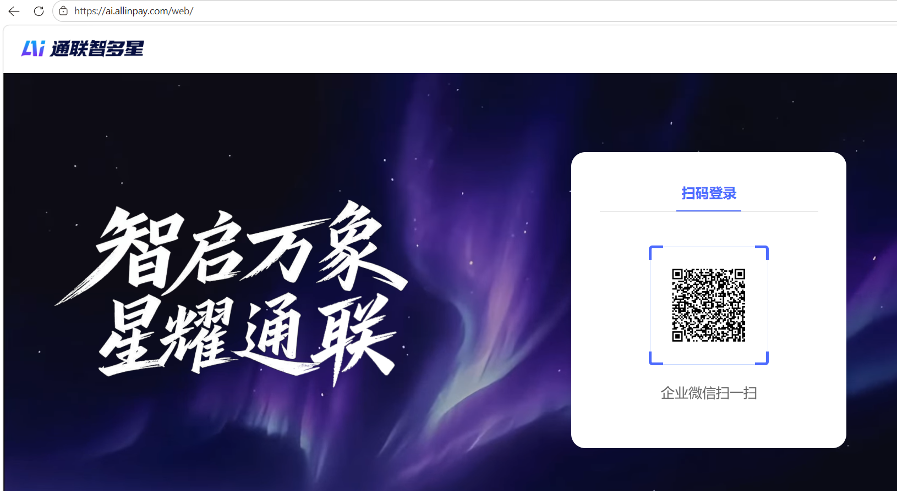
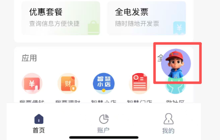
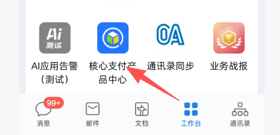
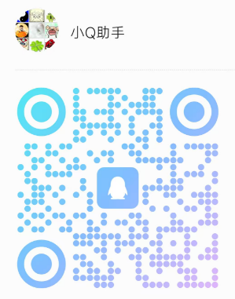
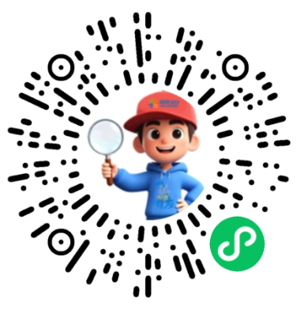
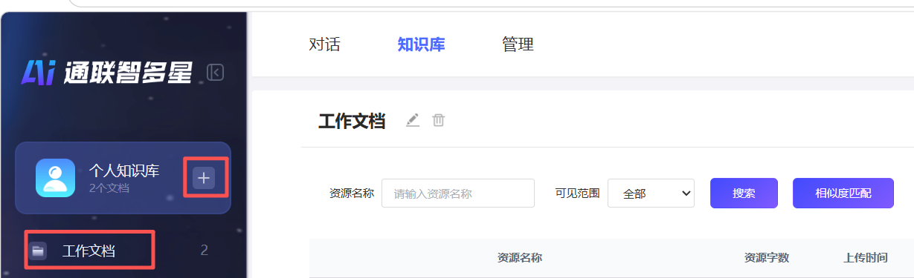
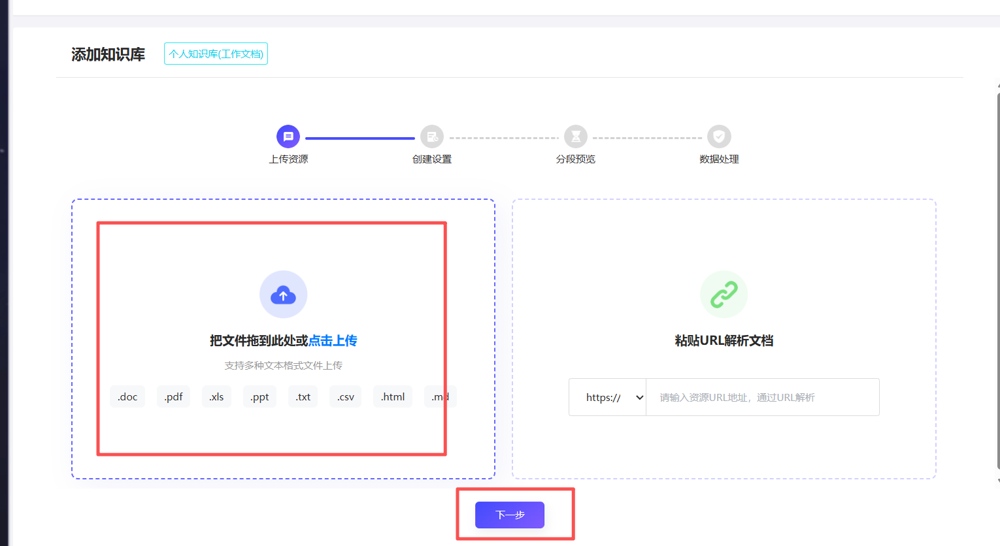
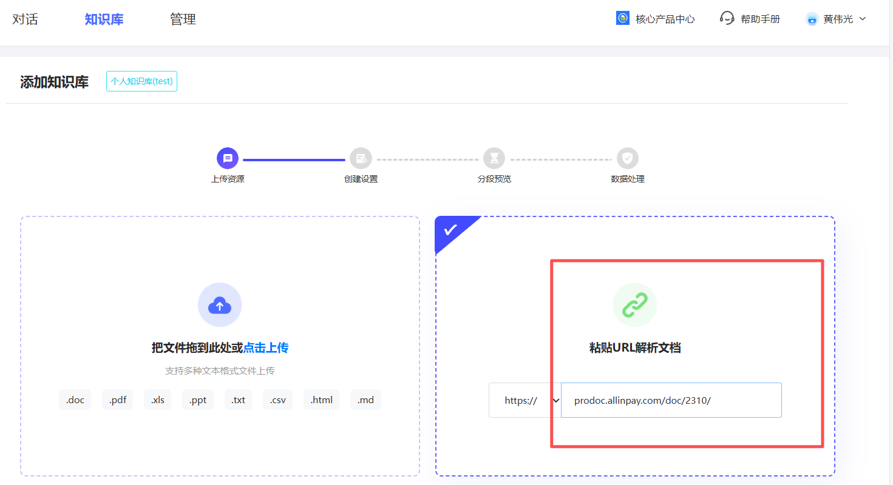
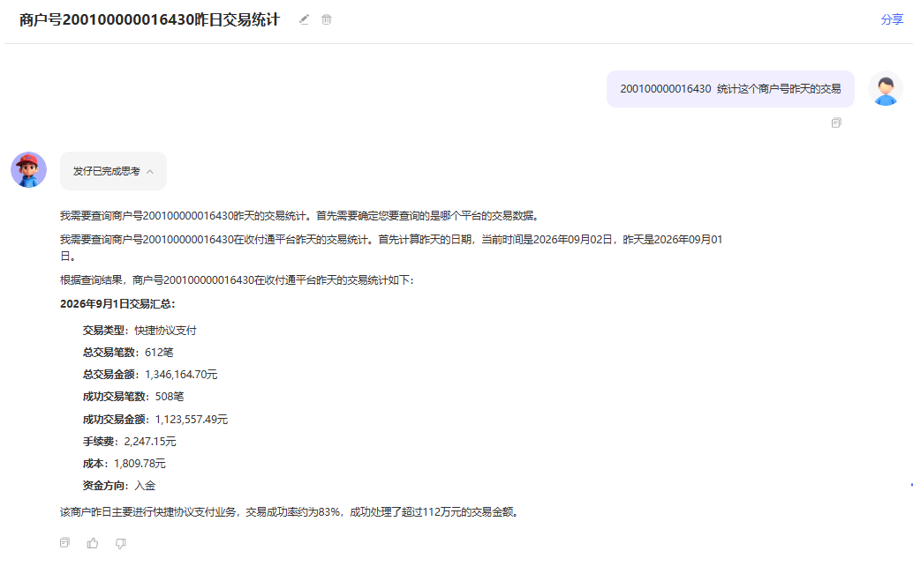
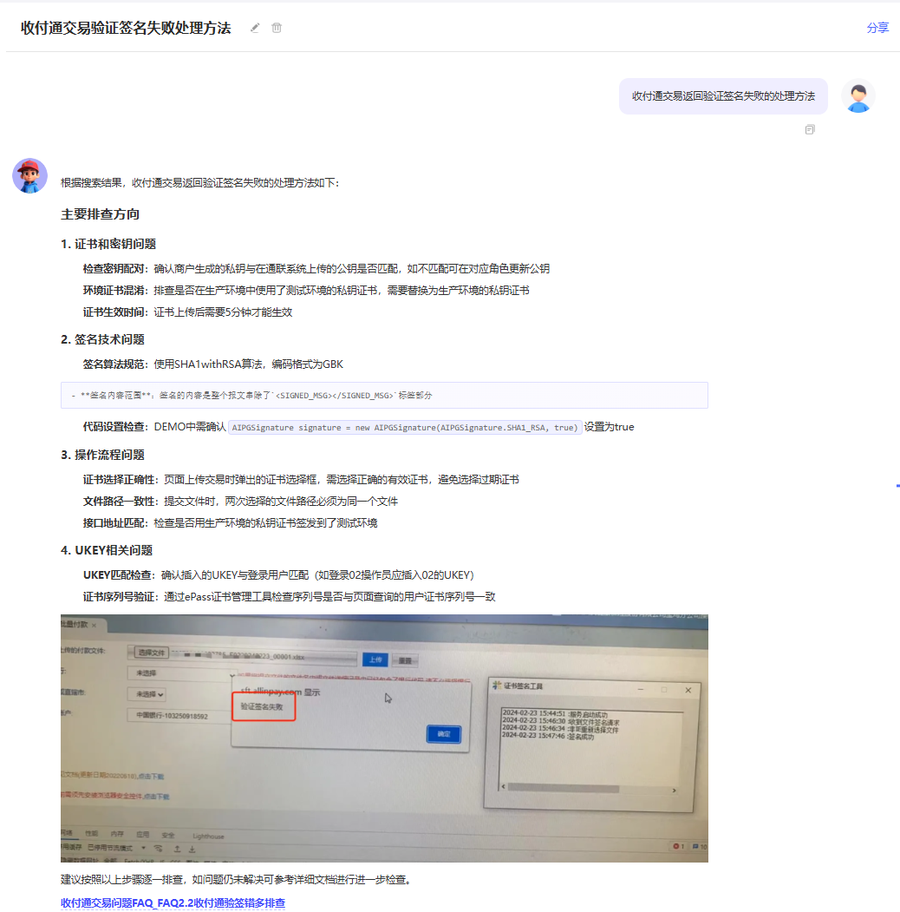

本次交流概览
01
智多星介绍
通联的 AI 底座是什么 · 由「发仔」把能力送到你面前
02
底座怎么建的
技术架构 · 能力全景 · 知识从哪来 · 数据怎么调
03
做过哪些尝试
初始智能体 · 六个业务场景 · 开放共创
04
局限与迭代
现在做不到什么 · 接下来怎么补 · 欢迎交流
通联统一的 AI 底座与智能体服务出口
通联的 AI 底座是什么 · 由「发仔」把能力送到你面前
技术架构 · 能力全景 · 知识从哪来 · 数据怎么调
初始智能体 · 六个业务场景 · 开放共创
现在做不到什么 · 接下来怎么补 · 欢迎交流
底座是什么，以及由谁把能力送到你面前





先看它怎么搭起来，再看能力与知识数据是怎么接进来的



从已落地的智能体，到业务场景里试过什么、还能怎么拓展



先把边界讲清楚，再讲我们打算怎么补齐